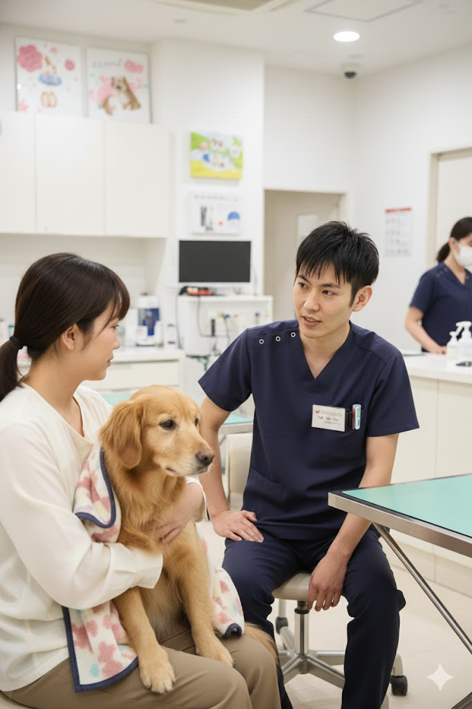
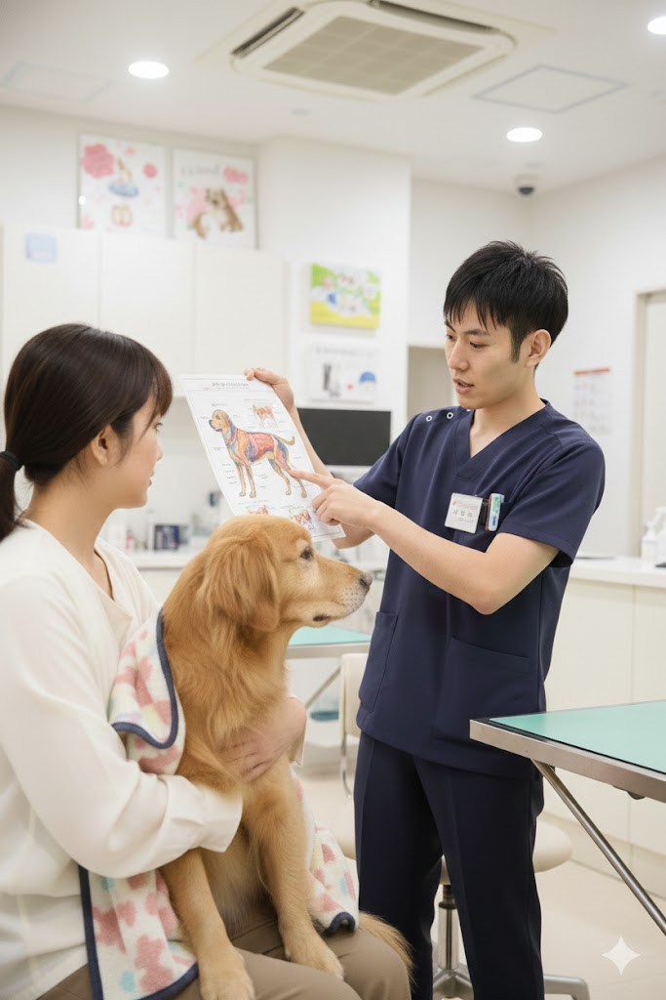

大阪市城東区の動物病院
大切な家族の
健康と笑顔を守る
診療・予防からペットホテル・トリミングまで
ペットの健康をトータルサポートいたします
Scroll
大阪市城東区の動物病院
診療・予防からペットホテル・トリミングまで
ペットの健康をトータルサポートいたします
あさひ動物病院は、大阪市城東区清水で
地域の皆様に愛される動物病院を目指しています。
ワンちゃん・ネコちゃんの一般診療から予防医療、 ペットホテル、トリミング、グループレッスンまで、 大切なペットの健康と幸せをトータルでサポートいたします。
些細なことでもお気軽にご相談ください。 スタッフ一同、心よりお待ちしております。
あさひ動物病院が大切にしていること

飼い主様のお話をしっかりとお聞きし、 ペットの状態を詳しく把握した上で 最適な治療方針をご提案いたします。

診断結果や治療内容について、 専門用語を避けてわかりやすく ご説明することを心がけています。

診療だけでなく、ペットホテル、 トリミング、グループレッスンなど 多彩なサービスをご用意しています。
当院で提供しているサービス

内科・外科の一般診療を行っております。体調の変化や気になる症状がございましたら、お気軽にご相談ください。

ワクチン接種、フィラリア予防、ノミ・ダニ予防など、大切なペットを病気から守る予防医療を行っています。
経験豊富なトリマーが、ワンちゃんを可愛く美しく仕上げます。皮膚の状態もチェックいたします。

ご旅行やお出かけの際に、大切なペットをお預かりいたします。獣医師が常駐しているので安心です。

しつけや社会化のためのグループレッスンを開催しています。他のワンちゃんとの交流の場にもなります。

定期的な健康診断で病気の早期発見・早期治療につなげます。シニアペットには特におすすめです。

予約なしでもご来院いただけますが、お待ちいただく場合がございます。お電話でのご予約をおすすめしております。
犬と猫を診療対象としております。その他の動物についてはお電話にてご相談ください。
はい、各種クレジットカードをご利用いただけます。詳しくはお電話にてお問い合わせください。
はい、駐車場をご用意しております。詳しくはお電話にてお問い合わせください。
お電話にてご予約を承っております。ご利用前に一度ご来院いただき、ワクチン接種状況などを確認させていただきます。